Science Chaser
STEM participation and learning evaluation through the Surrounded by Science project. Research chapter.
An exploratory look at other researchers’ findings, followed by compact spaces for learning, recall and continuing professional development.
A Comprehensive Framework for Differentiating Autism Spectrum Disorder From Neurotypicals by Fusing Structural MRI and Resting State Functional MRI · Seminars in Pediatric Neurology, 34, 100805.
The research, methods and findings belong to the original authors. Grace’s contribution here is exploratory reading, source curation and reflection as part of her own research.
The authors combined structural MRI features with resting-state fMRI features in a computer-aided classification framework. Their evaluation covered 18 ABIDE datasets and 1,060 participants. The abstract reports structural-MRI accuracy ranging from 75% to 100%, and fMRI accuracy from 79% to 100%. These are ranges across datasets, rather than one overall clinical accuracy.
Regional features were examined to help identify patterns contributing to classification. The authors proposed the approach as a potential aid to interpreting neuroimaging. These results do not establish a routine diagnostic test, identify an individual’s masking, or demonstrate learning-induced neuroplasticity.
The paper describes local K-nearest-neighbour classification, feature ranking and random-forest classification, followed by fusion of selected structural and functional features. AI is used to recognise statistical patterns in MRI-derived data.
Educational diagram adapted from the authors’ method; it is not an original article figure or a reproduction of their results.
Omar Dekhil; Mohamed Ali; Reem Haweel; Yaser Elnakib; Mohammed Ghazal; Hassan Hajjdiab; Luay Fraiwan; Ahmed Shalaby; Ahmed Soliman; Ali Mahmoud; Robert Keynton; Manuel F. Casanova; Gregory Barnes; Ayman El-Baz.
Summary based on the accessible abstract and indexed method excerpt. Full-text figures could not be retrieved. The supplied illustrations below have not been verified as figures from this paper.
Reference images curated by Grace for exploratory reading. Original creators retain credit; source identification is still to be completed. The comparison maps describe particular research tasks, not a universal “autistic brain” pattern. These are not Grace’s scans.
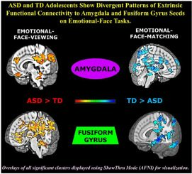
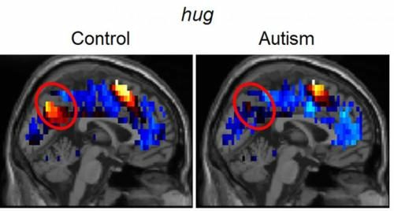
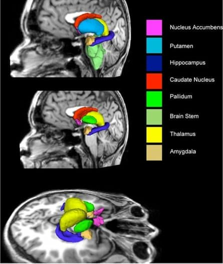
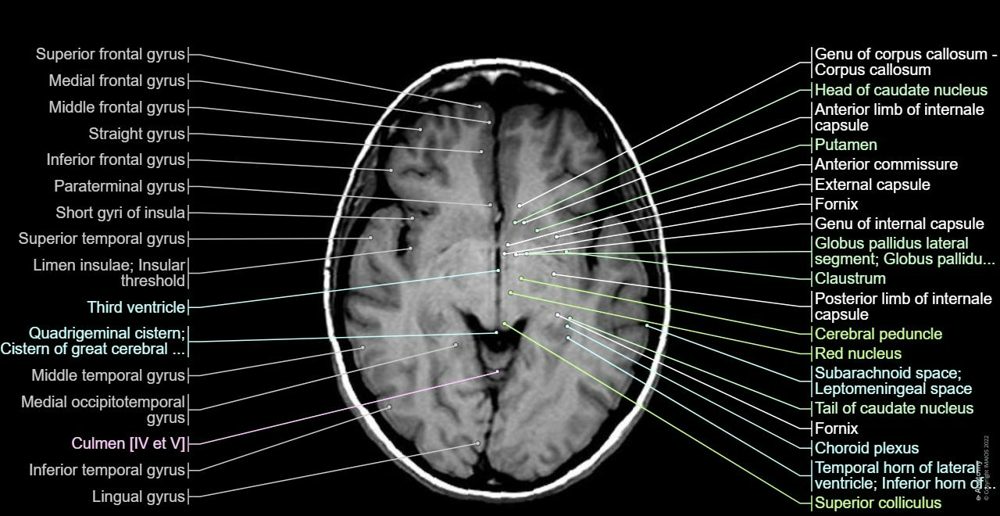
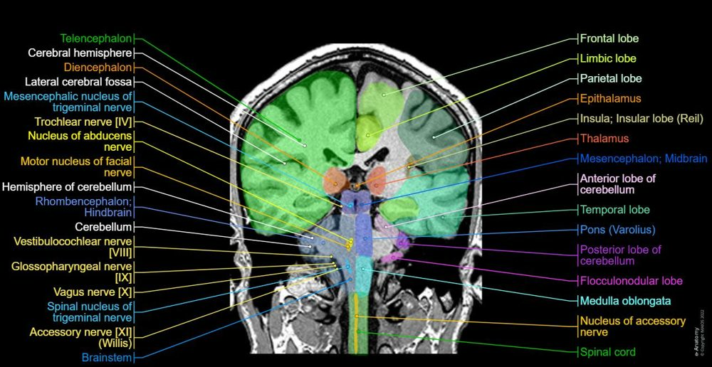
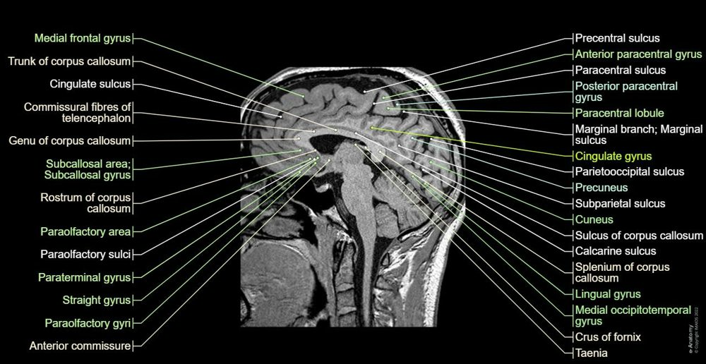
For clinical context, NICE’s adult-autism guidance advises against routine use of neuroimaging for diagnosis.
Ontology: cognitive neuroscience, neuropsychology, neurodevelopment, learning sciences and educational technology.
Epistemology: distinguish measured signals, statistical associations, lived experience, interpretation and causal evidence. A classifier, an anatomical label, a learning score and a personal reflection answer different kinds of questions.
| Method | Measures / estimates | Visual to explore |
|---|---|---|
| MRI | Brain structure | Labelled axial, coronal and sagittal slices |
| fMRI | Blood-oxygen changes associated with activity | Activation map and connectivity matrix |
| Diffusion MRI | Water diffusion; estimated white-matter pathways | Tractography |
| EEG | Scalp electrical potentials | Electrode placement and waveforms |
| MEG | Magnetic fields associated with neural activity | Sensor helmet and source map |
| fNIRS | Near-surface blood oxygenation | Source/detector placement and oxygenation curves |
| PET / SPECT | Tracer-dependent molecular or physiological information | Tracer uptake maps |
NIH: MRI · NIH: MEG · NIH: optical imaging · NIH: nuclear medicine
Investigating neuroplasticity requires an appropriate longitudinal design, repeatable measures and control of alternative explanations. Faster answers alone may reflect practice, strategy, familiarity or changing conditions.
Useful headings: situation; sensory demands; outward behaviour; internal experience; strategy used; effort; recovery; support that helped. This qualitative record can support reflection; it does not infer autism or masking from a scan. Keep personal entries private.
Track task accuracy, elapsed time, attempts and delayed recall. Compare like-for-like sessions and prioritise accuracy over speed. A repeated-item score is different from transfer to a new problem.
STEM participation and learning evaluation through the Surrounded by Science project. Research chapter.
Interactive STEM problems and feedback.
NCERT-aligned science chapter maps and interactive activities.
AI-generated flashcards, active recall and spaced repetition. Check generated cards against your source.
Science worlds and lesson-based exploration.
Cognitive games and in-game progress tracking. App claims and scores are distinct from independent evidence of wider benefit.
Lumosity and other app-listing screenshots supplied by Grace. Interface and promotional copy belong to their respective developers and listing providers; they are examples for comparison, not independent findings.
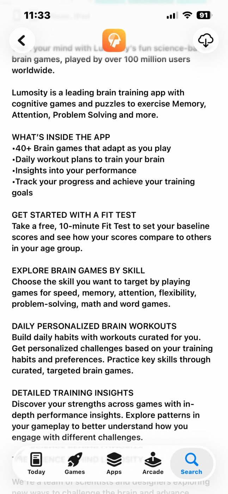
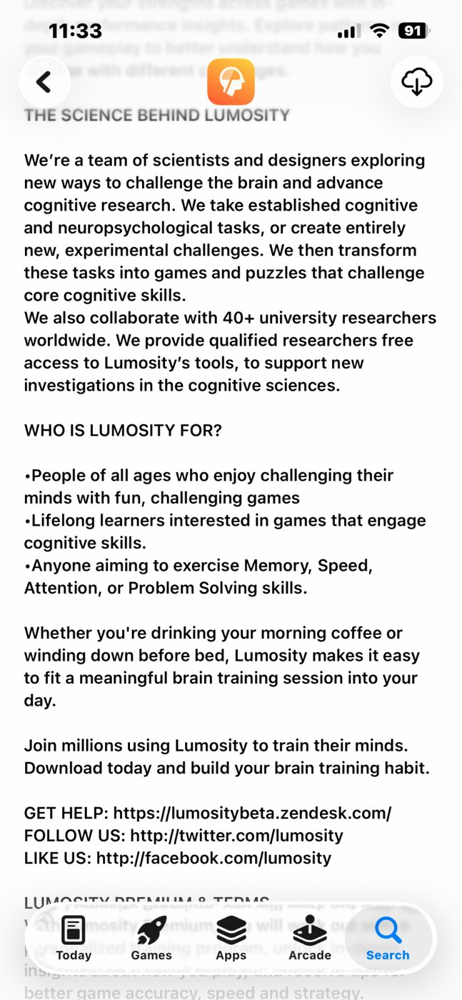
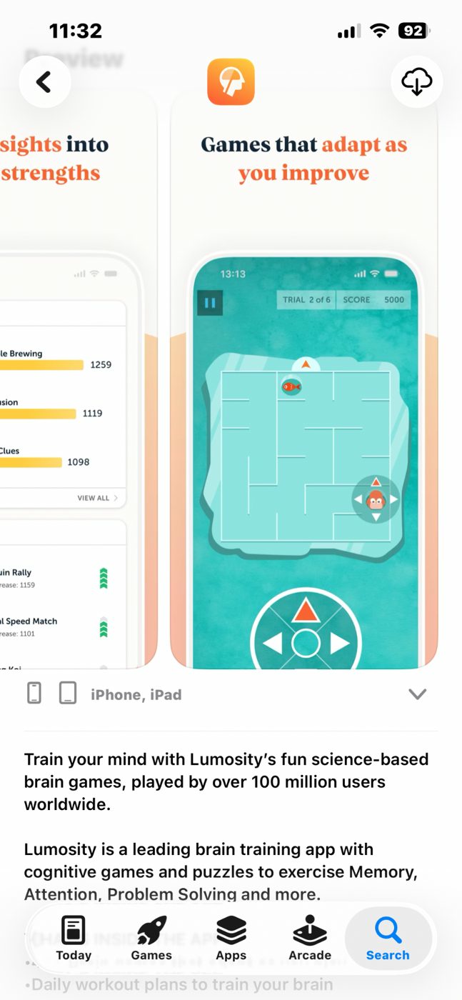
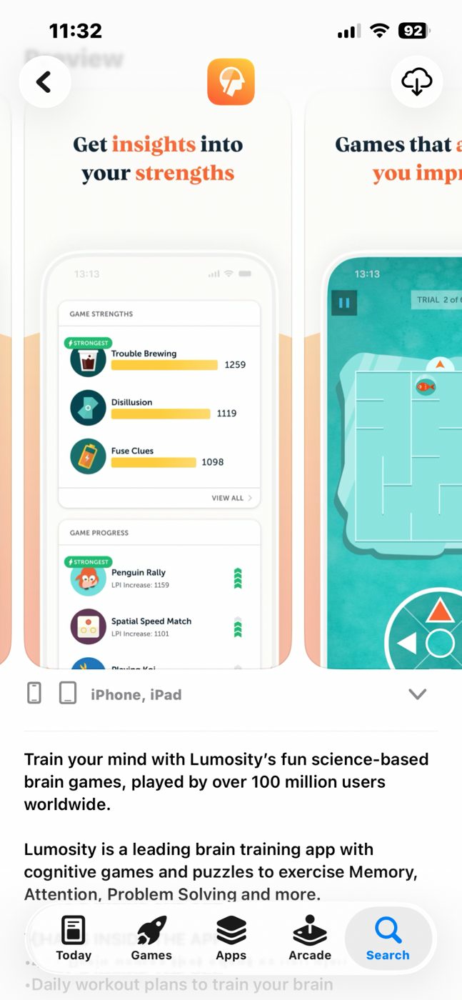
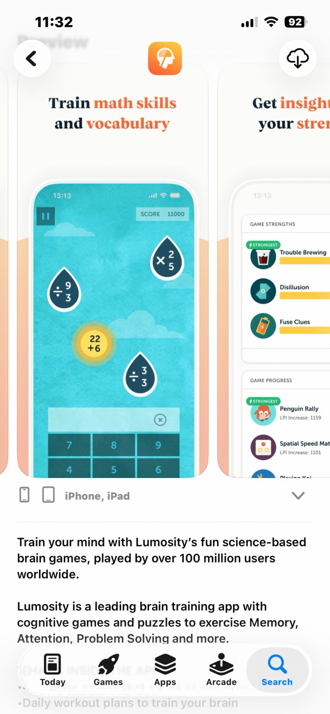
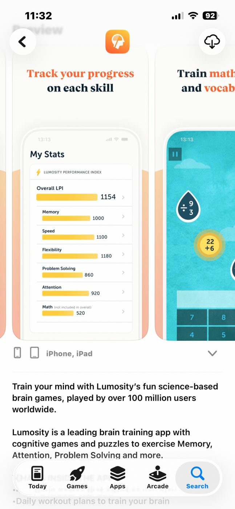
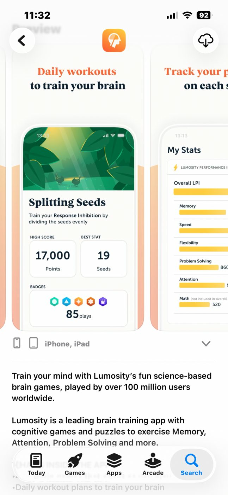
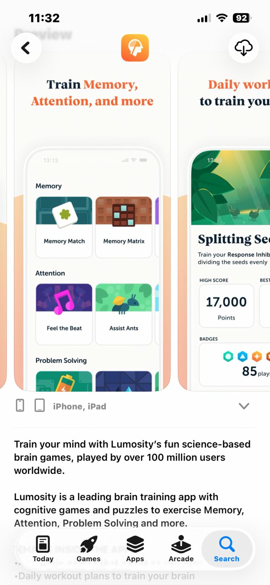
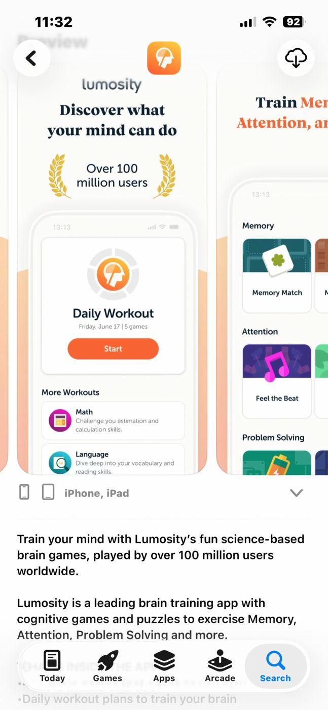
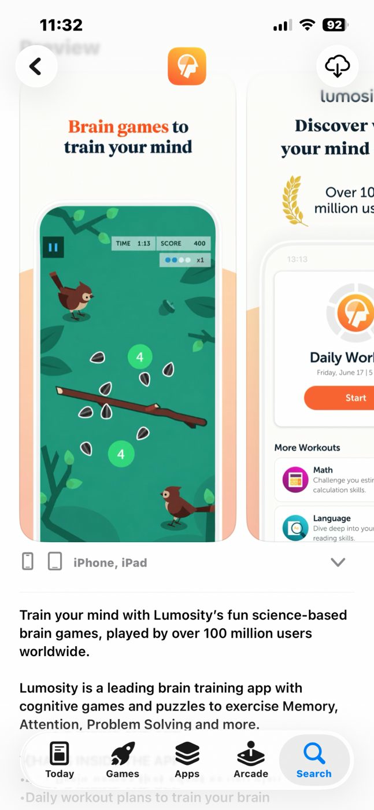
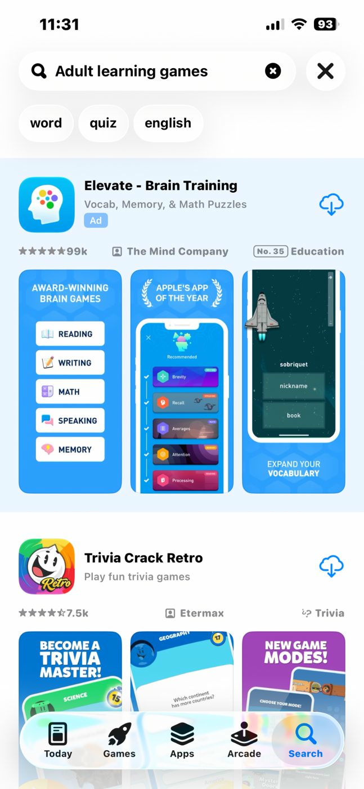
Use “Try a timed attempt” in the maths modules, or try a five-number sequence. This is an informal practice tool.
Records stay in this browser only. They are not shared, synced or clinical measurements. Export a copy to keep it.
| Session | Task | Correct | Seconds |
|---|
Read aloud, hide the meaning, recall and return later. These are starter phrases; register and pronunciation differ by language. Greek here is modern Greek; Latin is a classical-language starter.
| Sentence | Meaning |
|---|---|
| Bonjour. | Hello. |
| Je m’appelle Grace. | My name is Grace. |
| Où est la gare ? | Where is the station? |
How do you say “Hello.”?
Bonjour.
| Sentence | Meaning |
|---|---|
| Γεια σας. | Hello (polite). |
| Με λένε Γκρέις. | My name is Grace. |
| Πού είναι ο σταθμός; | Where is the station? |
How do you say “Hello (polite).”?
Γεια σας.
| Sentence | Meaning |
|---|---|
| Salve. | Hello (one person). |
| Quid agis? | How are you? |
| Gratias tibi ago. | Thank you. |
How do you say “Hello (one person).”?
Salve.
| Sentence | Meaning |
|---|---|
| שלום. | Hello. |
| קוראים לי גרייס. | My name is Grace. |
| איפה התחנה? | Where is the station? |
How do you say “Hello.”?
שלום.
| Sentence | Meaning |
|---|---|
| مرحبًا. | Hello. |
| اسمي غريس. | My name is Grace. |
| أين المحطة؟ | Where is the station? |
How do you say “Hello.”?
مرحبًا.
| Sentence | Meaning |
|---|---|
| Hallo. | Hello. |
| Ich heiße Grace. | My name is Grace. |
| Wo ist der Bahnhof? | Where is the station? |
How do you say “Hello.”?
Hallo.
| Sentence | Meaning |
|---|---|
| Hola. | Hello. |
| Me llamo Grace. | My name is Grace. |
| ¿Dónde está la estación? | Where is the station? |
How do you say “Hello.”?
Hola.
| Sentence | Meaning |
|---|---|
| Dia duit. | Hello (one person). |
| Grace is ainm dom. | My name is Grace. |
| Cá bhfuil an stáisiún? | Where is the station? |
How do you say “Hello (one person).”?
Dia duit.
| Sentence | Meaning |
|---|---|
| Hallo. | Hello. |
| Ik heet Grace. | My name is Grace. |
| Waar is het station? | Where is the station? |
How do you say “Hello.”?
Hallo.
| Sentence | Meaning |
|---|---|
| Ciao. | Hello (informal). |
| Mi chiamo Grace. | My name is Grace. |
| Dov’è la stazione? | Where is the station? |
How do you say “Hello (informal).”?
Ciao.
| Sentence | Meaning |
|---|---|
| Olá. | Hello. |
| Chamo-me Grace. | My name is Grace. |
| Onde fica a estação? | Where is the station? |
How do you say “Hello.”?
Olá.
Ga is included in the learning plan. Everyday sentences will be added from a reliable Ga teaching source or checked with a fluent speaker so pronunciation and spelling are not guessed.
Keep this separate from modern Greek: alphabet, morphology, vocabulary, syntax and guided text reading.
Solve 3x + 5 = 20.
5 — Subtract 5, then divide by 3.
For f(x)=x²−1, find f(3).
8 — 3²−1=8.
What is sin(30°)?
0.5 — The exact value is 1/2.
For y=x³, find dy/dx at x=2.
12 — dy/dx=3x²; 3×4=12.
Find the integral of 2x from 0 to 3.
9 — Antiderivative x²; 9−0=9.
A fair die is rolled. Probability of an even number?
0.5 — Three outcomes out of six.
Find the mean of 2, 4, 6, 8.
5 — Sum 20 divided by 4.
Speed is 4 m/s for 6 s. Distance in metres?
24 — For constant speed, distance=speed×time.
A study bridge into first-year university maths, rather than an accredited course. Foundation-year level and syllabus vary by institution.
The determinant of [[2,1],[3,4]]?
5 — ad−bc=8−3=5.
Limit of (x²−1)/(x−1) as x approaches 1?
2 — Cancel x−1 away from 1, leaving x+1.
Derivative of ln(x) at x=2?
0.5 — The derivative is 1/x.
What is i²?
-1 — i is defined by i²=−1.
For dy/dx=2x and y(0)=3, find y(2).
7 — y=x²+C; C=3.
One Newton step for x²−2=0, starting at x=1?
1.5 — x₁=x₀−f(x₀)/f′(x₀)=1−(−1)/2.
How many subsets does a set of three elements have?
8 — A set with n elements has 2ⁿ subsets.
Two independent fair coin flips: probability both heads?
0.25 — 1/2×1/2=1/4.
A personal planning chart. Items listed here are learning goals, not qualifications already obtained.
The chart saves in this browser. Use export for a portable copy.
Azure Fundamentals · AWS certification · Cybersecurity credentials · R project
R is a programming language; an R course certificate is provider-specific. Refresher certificates should identify the subject, provider and assessment.
Evaluate actions by their consequences. Ask whose welfare counts and how uncertain outcomes are handled.
Quiz: Which family judges actions primarily by outcomes?
Consequentialism.
Evaluate duties, principles and rights, including constraints on how people may be treated.
Quiz: Does a desirable outcome automatically override every duty?
No; deontological approaches can impose constraints.
Examine character, practical wisdom and human flourishing.
Quiz: What does virtue ethics foreground?
Character and practical wisdom.
Attend to relationships, dependency, vulnerability and responsibilities of care.
Quiz: What can a purely abstract rule overlook?
The needs and relationships of particular people.
Examine fair procedures, distribution, recognition and protections.
Quiz: Are equal treatment and equitable support always identical?
No; relevant differences may require different support.
Ask how moral claims are justified, challenged and revised.
Quiz: What distinguishes confidence from justification?
Justification supplies reasons that can be examined.
Test principles in technology, healthcare, institutions and everyday choices.
Quiz: What should a case analysis identify first?
Facts, uncertainty, stakeholders, options and competing values.
For a deeper study route: Stanford Encyclopedia of Philosophy.